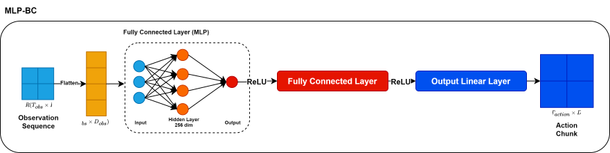
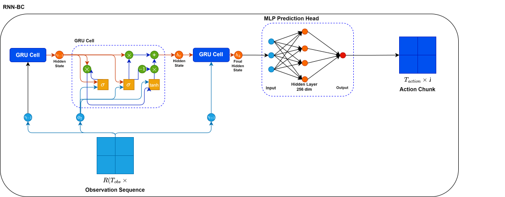
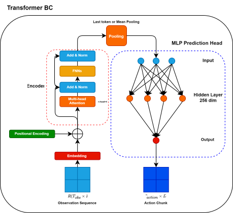
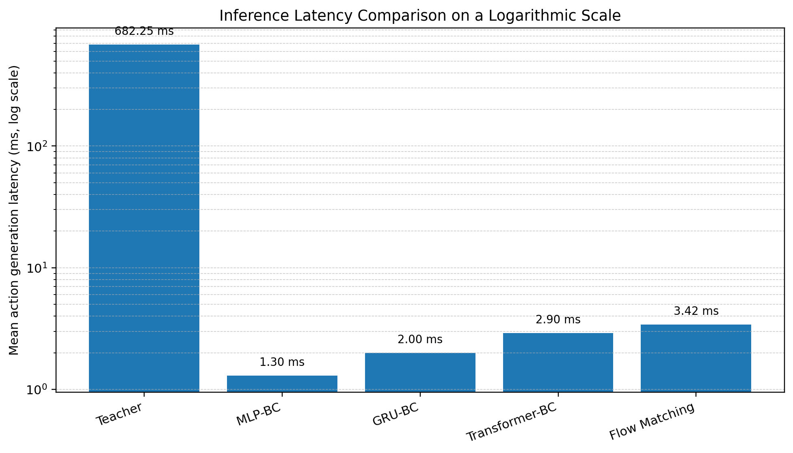
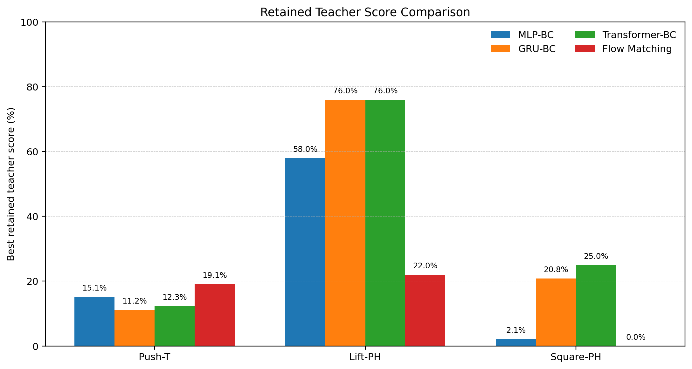

Abstract
Diffusion Policy can model complex action distributions in robotic manipulation, but its iterative denoising process introduces high inference latency. This project constructs a teacher-student distillation framework to accelerate Diffusion Policy while analyzing how much teacher behavior can be preserved. A pretrained Diffusion Policy is used as the teacher, and multiple student policies are compared, including MLP-BC, GRU-BC, Transformer-BC, and Flow Matching students. Experiments are conducted on Push-T, Lift-PH, and Square-PH. The results show that student policies reduce the average action generation latency from 682.25 ms to 2.39 ms, achieving approximately 285× speedup. However, behavior preservation remains task-dependent: GRU-BC performs best on Lift-PH, Flow Matching performs best on Push-T, and Transformer-BC performs best on Square-PH.
Method Overview
The project follows an offline teacher-student distillation pipeline. A pretrained Diffusion Policy teacher receives observation sequences and generates future action chunks. These teacher-generated actions are then recorded as distillation targets and used to train lightweight student policies. The students are evaluated through rollout performance and average predict_action latency, allowing a direct comparison between task performance and real-time efficiency.

Student Policy Architectures
Four student policy families were implemented and compared. MLP-BC provides a simple and fast deterministic baseline, GRU-BC introduces recurrent temporal modeling, Transformer-BC uses attention-based sequence modeling, and Flow Matching explores few-step generative action prediction.
MLP-BC

A lightweight behavior-cloning baseline that flattens observation history and predicts an action chunk with fully connected layers.
GRU-BC

A recurrent student policy designed to capture temporal dependencies in observation sequences.
Transformer-BC

An attention-based student policy for sequence modeling and action chunk prediction.
Flow Matching

A few-step generative student that learns a velocity field from a source action prior to the teacher action distribution.
Experimental Tasks
Experiments were conducted on three robotic manipulation tasks with different control characteristics: Push-T for low-dimensional planar pushing, Lift-PH for grasping and lifting, and Square-PH for more precise manipulation and alignment.
Push-T
Low-dimensional planar pushing task.
Lift-PH
Basic grasping and lifting task.
Square-PH
Precise manipulation, alignment, and placement task.
Main Results
Student policies significantly reduced action generation latency while showing task-dependent behavior preservation. The main result is that inference speed was improved by approximately 285×, but preserving the teacher policy's behavior remained the key bottleneck.
| Task | Best Student | Score | Retained Teacher Score | Speedup |
|---|---|---|---|---|
| Lift-PH | GRU-BC | 0.760 | 76.0% | 374.7× |
| Push-T | FM BC-Prior(MLP) 1-step | 0.174 | 19.1% | 223.9× |
| Square-PH | Transformer-BC | 0.240 | 25.0% | 297.0× |
Retained teacher score is computed as the best student score divided by the teacher score on the same task. Speedup is computed as teacher latency divided by student latency.


Model Strengths and Findings
| Method | Strength | Limitation | Best suited case |
|---|---|---|---|
| MLP-BC | Fast and simple deterministic baseline. | Limited temporal modeling ability. | Latency baseline. |
| GRU-BC | Stable recurrent temporal modeling. | Less expressive than generative students. | Lift-PH |
| Transformer-BC | Attention-based sequence modeling. | Slightly higher latency than simpler students. | Square-PH |
| Flow Matching | Few-step generative action prediction. | Unstable in precise manipulation under the current design. | Push-T |
Overall, the experiments suggest that different student architectures are suitable for different tasks. Few-step generative students showed potential in low-dimensional planar control, while GRU-BC and Transformer-BC were more stable in manipulation tasks requiring temporal modeling and precise control.
Teacher vs. Student Rollout Comparison
The following videos compare the pretrained Diffusion Policy teacher with the best-performing student policy on each task. They illustrate both the effectiveness and the remaining limitations of policy distillation.
Push-T
Best student: FM BC-Prior(MLP) 1-step.
Lift-PH
Best student: GRU-BC.
Square-PH
Best student: Transformer-BC.
Discussion and Limitations
The results indicate that policy distillation can effectively reduce the inference latency of Diffusion Policy, but preserving the teacher policy's behavior remains challenging. The current experiments were mainly conducted with limited rollout repetitions, and some conclusions should therefore be interpreted as descriptive trends rather than strict statistical claims. Future work may improve prior design for Flow Matching, strengthen the expressive capacity of student models, evaluate more acceleration methods, and extend the framework to real robotic systems.
Project Materials
Supplementary materials, including implementation details, experimental tables, and rollout videos, will be organized in the project repository and linked from this page.